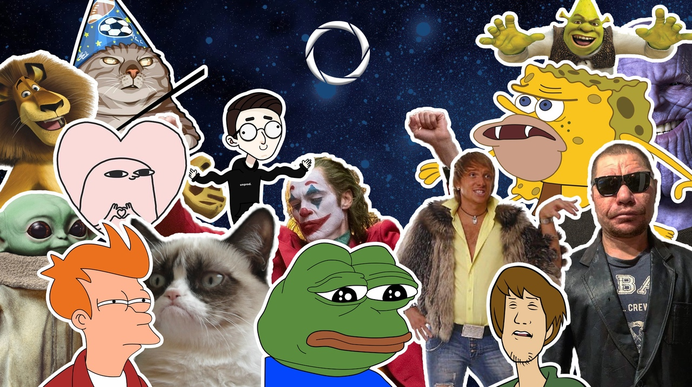
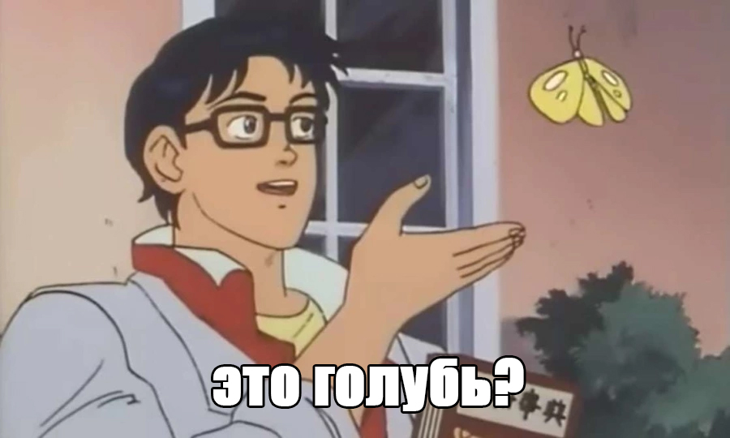

|
мемы 2022  мемы взятые из мультфильмов " Наша схватка будет легендарной» — фраза из мема и является его названием. По сюжету мультфильма главный антагонист встречается с пандой По и радуется тому, что на его боевом пути появился стоящий соперник. О чём и сообщает как себе, так и зрителя. «Не удивлённый Шрек» — так называется мем. Его можно использовать в противопоставление к мему с Пикачу . И хотя герой не удивлён, но выглядит несколько озадаченным. Что ж, эмоции бывают разными, и мы никого не смеем осуждать. Мем под названием «Это голубь?» появился благодаря японскому мультсериалу «Огненная птица». По сюжету андроид-трансформер Ютаро Катори пытается (безуспешно и нелепо) убедить полицейского, что является обычным человеком. Но допускает одну ошибку за другой. Для начала он показывает на бабочку и спрашивает не голубь ли это, а уже дальше продолжает прокалываться, путая розы и фиалки. |